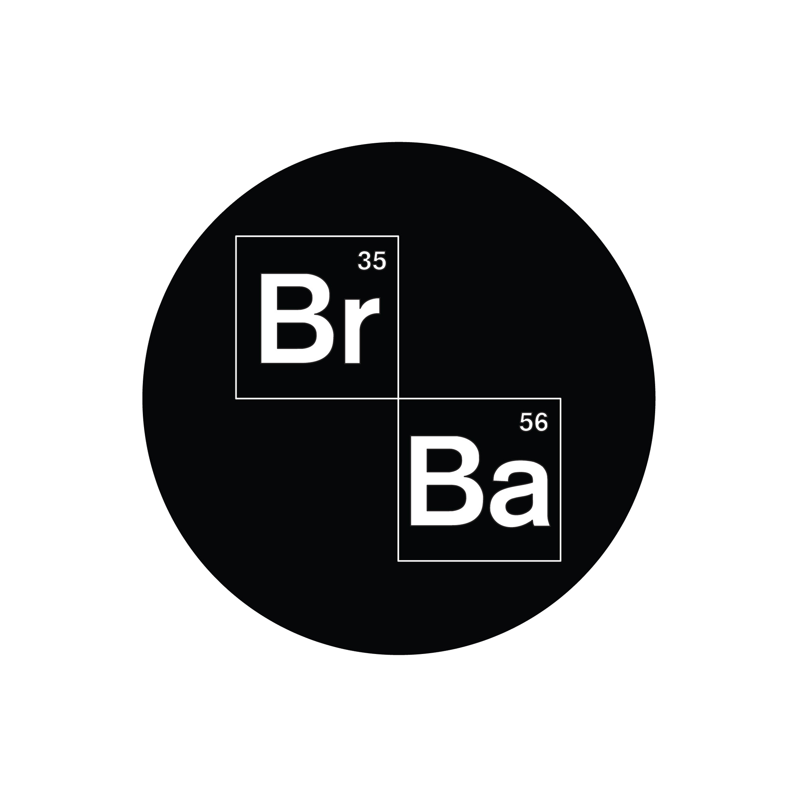

<mat-card id="card" class = "card">

	<mat-card-content>

    
    <hr  noshade="noshade" size="2" width="100%"  color="black"/>

    <h2> <i>•Nombre: Julieta Sdrubolini.</i></h2>
    <h2> <i>•Github: <a href="https://github.com/JuliSdru"> @JuliSdru </a></i> </h2>
    <h2> <i>•Profesor: Mario Rampi (LAB IV). </i></h2>
    <h2> <i>•Estilos utilizados: <a href="https://material.angular.io/"> Angular Material </a></i> </h2>
    <h2> <i>•Tarea: Trabajo práctico en representación de primer parcial utilizando API.</i></h2>

  </mat-card-content>

</mat-card>